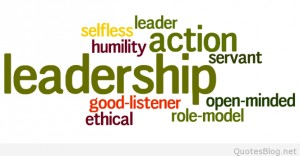

| Home | Leadership | Teaching and Learning | Instructional Design | Multimedia Development | Professional Development | Resume |
|---|
|  |
| Artifacts | |
|---|---|
| University of Akron | Field Experience |
| Grant Writing Project The goal of this proposal is to seek funding from Brunswick Education Foundation to help purchase one iPad with the Apple Pencil for use in the art room at Walter Kidder Elementary School. There are approximately 450 students at Kidder that would benefit from having an iPad in the art room. The integration of an iPad would help students explore the elements and principals of art in ways they cannot do with traditional mediums. The students will be able to learn about layers with transparency, resizing and rotating objects for improving composition and using self-evaluation by easily undoing mistakes. Even though this grant is for only one iPad the goal is to demonstrate the benefits the technology brings to art students. The data collected will be used to write additional grants for additional iPads in the future. |
Brunswick Board of Education Yearly Art Show For the past 10 years I have been organizing the yearly elementary art show for the Brunswick City School District. This show is displayed in the Brunswick Board of Education offices every year. The artwork is matted and framed by me to be displayed in the BOE for the entire school year. In March all the students and their families are invited to a special celebration in front of the entire school board. This celebration is called the Brunswick Pride Awards. The districts Assistant Superintendent presents each student with an award and a special Brunswick Pride pin. I work with all the elementary art teachers in collecting the artwork and promoting the amazing work of all the teachers and their students. Reflection |
| Technology Plan Evaluation The link above is a review of the technology plan for Bloom-Carroll Local School District. The current technology plan (2017-2020) has been thoroughly reviewed and recommendations have been made to enhance the plan. These recommendations include: changes to the existing technology team, creating parent and teacher technology surveys to help collect data, addressing outdated technology, considering new budgetary needs and identifying specific technology for special education and encore teachers. Even though Bloom-Carrol Local Schools plan is very thorough a few additions will advance the district into the 21st century. The students and staff will benefit greatly from the implementation of this plan and help the students thrive as 21st century learners. |
Kidder Community Team I was chosen by my principal to be part of this leadership team. This team was organized to roll out a new program in the building I work in. The idea behind the Kidder Community is to promote a sense of community pride within the building. We structured this to go along with the PBIS program already in place. The team meets once a month to organize the school wide community meetings focusing on teaching the students how to work together to achieve a common goal, doing “your” part, being helpful and kind, and showing respect to others. Reflection |
| Last Revised: April 2019 - ©MarkVance |
| |